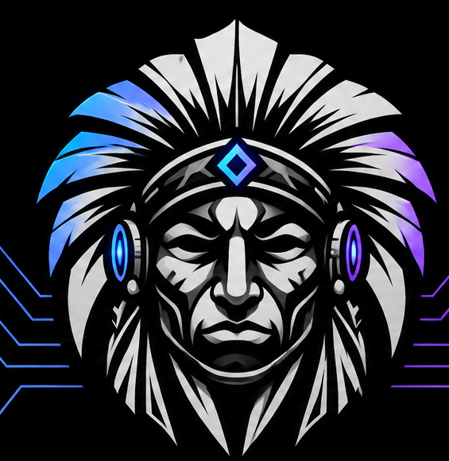
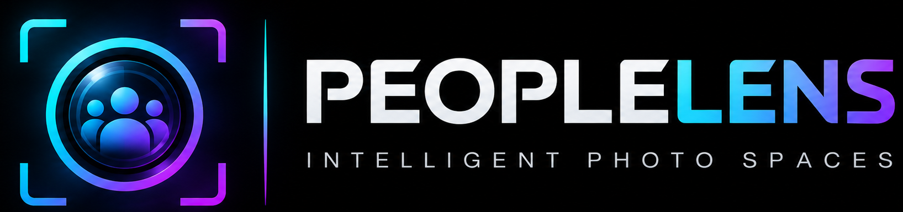

Useful by design
Start with real needs. Make the experience clear, considered and genuinely helpful.

We build thoughtful digital products that make technology more useful, accessible and human.
TantraYantra is an independent technology and product-building brand focused on turning ideas into practical digital experiences.
We bring together engineering, curiosity and thoughtful design to create tools that solve real problems — one product at a time.
Start with real needs. Make the experience clear, considered and genuinely helpful.
Explore new ideas, learn continuously and turn experimentation into working products.
Value reliability, privacy, accessibility and the details that earn people's trust.
A growing collection of ideas starts with one useful tool. Meet PeopleLens.

LOCAL-FIRST PHOTO ORGANISATIONPeopleLens is a desktop-first photo management application designed to help people organise their photo libraries, discover faces and keep their memories close — with a local-first approach.
Explore our GitHub ↗We'd love to hear from curious minds, potential collaborators and people who care about building useful technology.
Connect on GitHub ↗